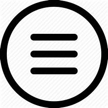
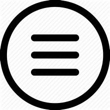

The Beginning
Croatia's history is marked by a diverse tapestry of civilizations, each leaving its imprint on the country's cultural heritage.
 

Croatia's history is marked by a diverse tapestry of civilizations, each leaving its imprint on the country's cultural heritage.
Croatia's history dates back to the Neolithic period, with evidence of human settlement found as early as the Paleolithic era. During ancient times, the area was inhabited by various Illyrian tribes.
Croatia was part of the Roman Empire, and it was known as the province of Illyricum. Roman influence left behind significant architectural and cultural heritage.
Croatia experienced various rulerships during the medieval period, including the Kingdom of Croatia, the Kingdom of Hungary, and the Republic of Venice. In 925, Croatia formed a personal union with Hungary, which lasted for centuries.

Following the Battle of Mohács in 1526, Croatia entered into a union with the Habsburg Monarchy of Austria. This period saw significant cultural and political developments.

Croatia's aspirations for independence grew during the 19th century, culminating in the Croatian National Revival movement. However, Croatia remained part of the Austro-Hungarian Empire until its collapse at the end of World War I.
After World War I, Croatia became part of the Kingdom of Serbs, Croats, and Slovenes, later renamed Yugoslavia. During World War II, Croatia was a puppet state under Nazi Germany and Fascist Italy. After the war, it became one of the six socialist republics of Yugoslavia.

In the early 1990s, Croatia declared independence from Yugoslavia, leading to the Croatian War of Independence. The war ended in 1995 with Croatia becoming an independent state.

Since gaining independence, Croatia has faced challenges of transitioning to a democratic state, rebuilding its economy, and resolving issues related to minority rights and war crimes. It joined the European Union in 2013.